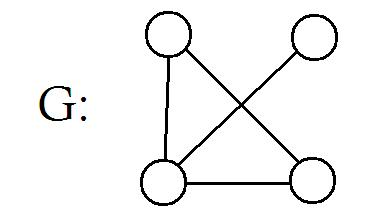
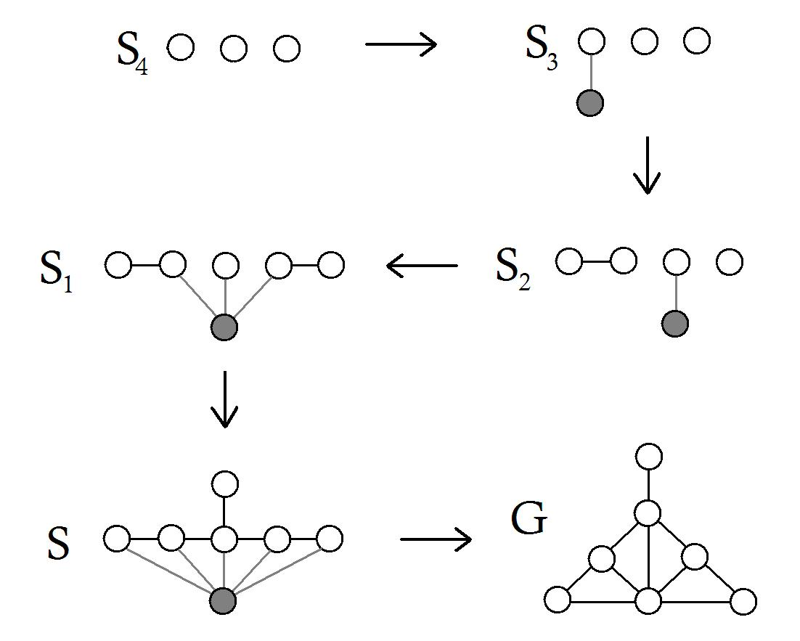
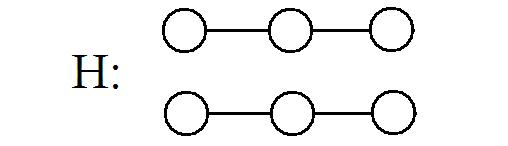

Section 1.6 Graphical sequences
¶A sequence \(d_1, d_2, \cdots, d_n\) of non-negative integers is a degree sequence of a graph \(G\) if \(G\) has order \(n\) and \(d_1, d_2, \cdots, d_n\) are the degrees of the vertices of \(G\text{.}\) A graphical sequence is a sequence for which there exists a graph \(G\) such that the sequence is the degree sequence of \(G\text{.}\)
Example 1.6.1. Graphical sequences.
The graph \(G\) in Figure 1.6.2 has degree sequence 3, 2, 2, 1. Hence the sequence 3, 2, 2, 1 is graphical.
The sequence 3, 3, 2, 1 is not graphical, since no graph exists with degree sequence 3, 3, 2, 1. (Why?)

The following characterization of graphical sequences is due to Havel (1955) and Hakimi (1962).
Theorem 1.6.3.
A sequence \(s: d_1, d_2, \cdots, d_n\) of non-negative integers with \(d_1 \geq d_2 \geq \cdots \geq d_n,\ n \geq 2\) and \(d_1 \geq 1\text{,}\) is graphical if and only if the sequence \(s_1: d_2-1, d_3-1, \cdots, d_{d_1+1}-1, d_{d_1+2}, \cdots, d_n\) is graphical.Proof.
Assume first that \(s_1\) is graphical, and let \(G_1\) be a graph of order \(n-1\) with degree sequence \(s_1\text{.}\) Label the vertices of \(G\) as \(v_2, v_3, \cdots, v_n\text{,}\) so that
and
Construct graph \(G\) by adding a new vertex \(v_1\) and the \(d_1\) edges \(v_1v_i\) for \(2 \leq i \leq d_1 + 1\text{.}\) Then \(G\) has degree sequence \(S\) with \(\deg(v_i) = d_i\) for \(1 \leq i \leq n\text{.}\)
Conversely, assume \(S\) is graphical. Among all graphs of order \(n\) with degree sequence \(S\text{,}\) let \(G\) be one with \(V(G) = \{ v_1, v_2, \cdots, v_n \}\) and \(\deg(v_i) = d_i\) for \(i = 1,2,\cdots,n\) such that the sum of the degrees of the vertices adjacent to \(v_1\) is a maximum.
We must show that \(v_1\) is adjacent to vertices with degrees \(d_2, d_3, \cdots, d_{d_1 + 1}\text{,}\) for then the graph \(G - v_1\) (the graph \(G\) where the vertex \(v_1\) is removed) has degree sequence \(s_1\text{.}\)
Suppose to the contrary that there exist vertices \(v_r\) and \(v_s\) with \(d_r > d_s\) such that \(v_1\) is adjacent to \(v_s\) but not to \(v_r\text{.}\) Since \(d_r > d_s\text{,}\) there is a vertex \(v_t\) such that \(v_t\) is adjacent to \(v_r\) but not to \(v_s\text{.}\) Removing edges \(v_1v_s\) and \(v_rv_t\) and adding edges \(v_1v_r\) and \(v_sv_t\) result in a graph \(G'\) having the same degree sequence as \(G\text{.}\) However, in \(G'\) the sum of the degreesof the vertices adjacent to \(v_1\) is larger than that in \(G\text{,}\) contradicting the choice of \(G\text{.}\)
Example 1.6.4.
Is 5, 4, 3, 3, 2, 2, 1 graphical?| \(s\text{:}\) | \(5\) | \(\dot{4}\) | \(\dot{3}\) | \(\dot{3}\) | \(\dot{2}\) | \(\dot{2}\) | \(1\) |
| \(s_1'\text{:}\) | \(3\) | \(2\) | \(2\) | \(1\) | \(1\) | \(1\) | |
| \(s_1\text{:}\) | \(3\) | \(\dot{2}\) | \(\dot{2}\) | \(\dot{1}\) | \(1\) | \(1\) | |
| \(s_2'\text{:}\) | \(1\) | \(1\) | \(0\) | \(1\) | \(1\) | ||
| \(s_2\text{:}\) | \(1\) | \(\dot{1}\) | \(1\) | \(1\) | \(0\) | ||
| \(s_3'\text{:}\) | \(0\) | \(1\) | \(1\) | \(0\) | |||
| \(s_3\text{:}\) | \(1\) | \(\dot{1}\) | \(0\) | \(0\) | |||
| \(s_4'\text{:}\) | \(0\) | \(0\) | \(0\) |
Theorem 1.6.3 tells us that \(s\) is graphical iff \(s_1\) is graphical iff \(s_2\) is graphical iff \(s_3\) is graphical iff \(s_4\) is graphical. But we know that 0, 0, 0 is graphical - it is the degree sequence of a graph with three vertices and no edges. Therefore \(s_4, s_3, s_2, s_1,\) and \(s\) are all graphical. In fact, we can construct graphs with these degree sequences by "working back-wards" - retracing our steps: see Figure 1.6.5.

Thus \(G\) is a graph with graphical sequence 5,4,3,3,2,2,1. Note that \(G\) is not unique.
Also note that not all graphs can be obtained by this procedure on its degree sequence - an example is the graph \(H\) in Figure 1.6.6 with degree sequence 2, 2, 1, 1, 1, 1.
